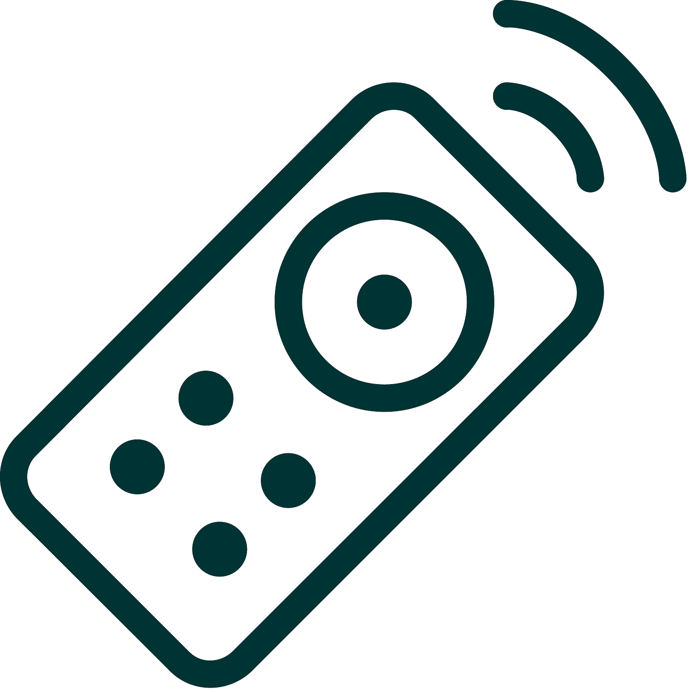

Início >> Automação Residencial
O que é a Automação Residencial?
"A automação residencial oferece acesso a dispositivos de controle em sua casa a partir de um dispositivo móvel em qualquer lugar do mundo. O termo pode ser usado para dispositivos programáveis isolados, como termostatos e sistemas de sprinklers, mas a automação residencial descreve com mais precisão casas nas quais quase tudo - luzes, eletrodomésticos, tomadas elétricas, sistemas de aquecimento e refrigeração - são conectados a uma rede controlável remotamente.
Do ponto de vista da segurança doméstica, isso também inclui seu sistema de alarme e todas as portas, janelas, travas, detectores de fumaça, câmeras de vigilância e quaisquer outros sensores que estejam ligados a ele.Fonte: SafeWise
Automação
A automação é, sem surpresa, uma das duas principais características da automação residencial. Automação refere-se à capacidade de programar e agendar eventos para os dispositivos na rede. A programação pode incluir comandos relacionados ao tempo, como ativar ou desativar suas luzes em horários específicos a cada dia. Também pode incluir eventos não programados, como acender todas as luzes da sua casa quando o alarme do sistema de segurança é acionado.
Uma vez que você comece a entender as possibilidades da programação de automação residencial, você pode encontrar inúmeras soluções úteis e criativas para tornar sua vida melhor. Aquela janela virada para o oeste está deixando entrar muita luz? Conecte seus estores motorizados em uma tomada "inteligente" e programe-o para fechar ao meio-dia todos os dias. Você tem alguém vindo na mesma hora todos os dias para passear com o cachorro? Programe seu sistema de automação residencial para destravar a porta da frente para eles e bloqueá-lo novamente quando eles estiverem prontos.
Controle Remoto
A outra característica principal da automação residencial de ponta é o monitoramento e acesso remotos. Embora uma quantidade limitada de monitoramento remoto unidirecional seja possível há algum tempo, é só desde o aumento dos smartphones e tablets que tivemos a capacidade de realmente nos conectar a nossas redes domésticas enquanto estamos fora. Com o sistema de automação residencial certo, você pode usar qualquer dispositivo conectado à Internet para visualizar e controlar o sistema em si e todos os dispositivos conectados.
Os aplicativos de monitoramento podem fornecer várias informações sobre sua casa, desde o status atual até um histórico detalhado do que aconteceu até agora. Você pode verificar o status do seu sistema de segurança, se as luzes estão acesas, se as portas estão trancadas, qual a temperatura atual da sua casa e muito mais. Com câmeras como parte de seu sistema de automação residencial, você pode até conseguir feeds de vídeo em tempo real e, literalmente, ver o que está acontecendo em sua casa enquanto estiver fora.
Até mesmo notificações simples podem ser usadas para realizar muitas tarefas importantes. Você pode programar o seu sistema para enviar uma mensagem de texto ou e-mail sempre que o sistema de segurança registrar um possível problema, desde alertas de tempo severo até avisos de detecção de movimento e alarmes de incêndio. Você também pode ser notificado para eventos mais mundanos, como programar a trava da porta da frente “inteligente” para avisá-lo quando sua criança voltar da escola.
O verdadeiro controle prático vem quando você começa a interagir com o sistema de automação residencial a partir do seu aplicativo remoto. Além de armar e desarmar seu sistema de segurança, você pode reprogramar o agendamento, bloquear e desbloquear portas, redefinir o termostato e ajustar as luzes a partir do seu telefone, de qualquer lugar do mundo. Como os fabricantes estão criando cada vez mais dispositivos e aparelhos “inteligentes”, as possibilidades de automação residencial são praticamente ilimitadas.
Eficiência Energética
Uma clara vantagem da automação residencial é o potencial inigualável de economia de energia e, portanto, redução de custos. Seu termostato já é "inteligente", no sentido de usar um limite de temperatura para controlar o sistema de aquecimento e resfriamento da casa. Na maioria dos casos, os termostatos também podem ser programados com diferentes temperaturas-alvo, a fim de manter o uso de energia no mínimo durante as horas em que é menos provável que você se beneficie do aquecimento e resfriamento.
No nível mais básico, a automação residencial estende a programação programada até a iluminação, para que você possa adequar seu uso de energia à sua programação diária habitual. Com sistemas de automação residencial mais flexíveis, tomadas elétricas ou mesmo dispositivos individuais também podem ser desligados automaticamente durante horas do dia, quando não são necessários. Assim como em dispositivos isolados, como termostatos e sistemas de sprinklers, o agendamento pode ser subdividido para distinguir entre finais de semana e até mesmo estações do ano, em alguns casos.
Definir horários são úteis, mas muitos de nós mantemos horas diferentes do dia para dia. Os custos de energia podem ser ainda mais reduzidos, programando “macros” no sistema e controlando-o remotamente sempre que necessário. Em outras palavras, você pode configurar um evento "voltando para casa" que ativa as luzes e o aquecimento enquanto você dirige para casa depois do trabalho, por exemplo, e ativa tudo com um toque no smartphone. Um evento contrário de "sair de casa" pode evitar que você gaste energia em luzes e aparelhos esquecidos depois de sair para o dia.Fonte: SafeWise